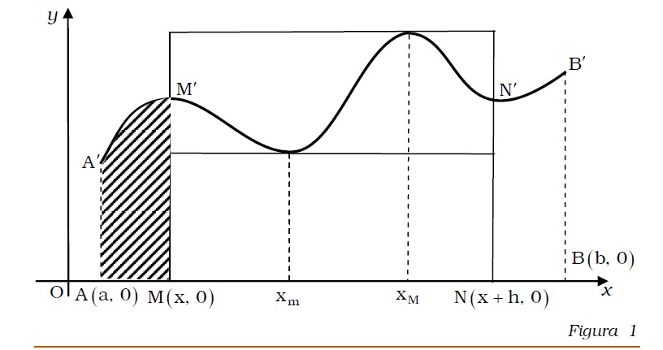
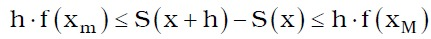
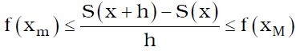
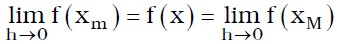
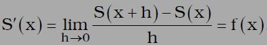
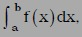

REZUMAT:~~~Click !!~~~
Problema spatiului parcurs de un mobil in miscarea rectilinie
Se considera un punct mobil M care se deplaseza rectiliniu, in acelasi sens, pe o axa , cu viteza instantanee la momentul x egala cu v(x). Daca S(X) este distanta parcursa de mobil de la momentul initial t=0 la momentul t=x, atunci, conform definitiei vitezei instantanee, are loc egalitatea v(x)=S'(x).
Problema se poate puna insa si invers: daca se cunoaste viteza instantanee v(x) in fiecare moment x, atunci se poate determina distanta parcursa de mobil in intervalul de timp [0,x]?
Din punct de vedere matematic , problema revine la a studia daca exista o functie S care verifica egalitatea S'(x)=v(x). Cu alte cuvinte, problema revine la a determina functia cand se cunoaste derivata sa, determinare care face obiectivul capitolelor urmatoare.
Problema ariei unei suprafete plane
Se considera f:[a,b]-->R o functie continua si pozitiva.
Se noteaza cu S functia care asociaza fiecarui x are apartine intervalului [a,b] aria S(x) a suprafetei plane marginite de curba y=f(x), axa Ox pe intervalul [a,x] si segmentele [A A'],[M M'] unde A(a,0), A'(a,f(a)), M(x,0), M'(x,f(x)), (figura 1).

Functia S, numita si functia "arie", este derivabila pe intervalul [a,x].
Intr-adevar, fie N care apartine axei Ox, N(x+h,0), h>0 si xm, xM care apartin intervalului [x,x+h] puncte in care f ia valoare maxima pe intervalul [x,x+h].
Deoarece aria suprafetei curbilinii [MM'N'N] este cuprinsa intre ariile dreptunghiurilor cu baza [MN] si cu inaltimile egale cu f(xm), respectiv f(xM), au loc relatiile:

De aici se obtine:
 (1)
Pentru h-->0 avem:

Prin trecere la limita dupa h-->0 in relatia (1) si folosind definitia derivatei se obtine:

Asadar, functia S este derivabila si S'(x)=f(x), x apartine intervalului [a,b], (2), relatie care exprima derivata functiei "arie" cu ajutorul functiei f.
O problema care se pune in legatura cu relatia (2) este: "Sa se determine aria suprafetei plane asociate functiei f pe un interval [a,b], in ipoteza ca se cunoaste derivata sa."
Gottfried Wilhelm Leibniz (1646-1716) a notat aceasta arie cu simbolul:
 citit "integrala de la a la b din f(x)".
Rezolvarea deplina a problemelor care cer determinarea functiei cand se cunoaste derivata sa se va face introducand noile concepte matematice: "primitiva" si "integrala definita".
Aici jos veti gasi un tutorial video interesant care sigur va poate ajuta:
~~~Click !!~~~